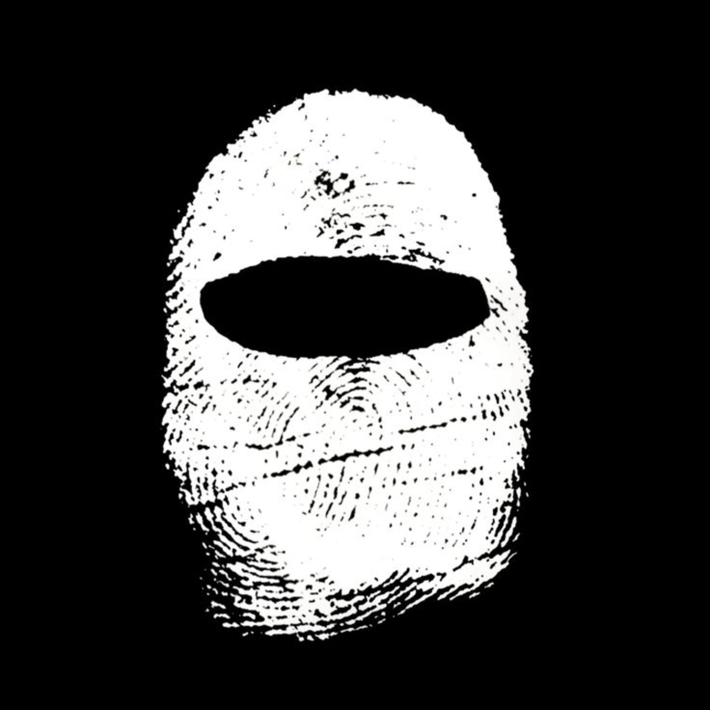

Available for Internships
I
Build
Things.
I learn by building. From Python automation scripts to AI-assisted security tools, I use projects as a way to understand how systems work, break, scale, and improve.
9+
Projects Built
12+
Technologies Explored
Sec
Cybersecurity Focus
I am a Cybersecurity and AI/ML student focused on practical learning through project development.
- Vulnerability Assessment & Penetration Testing
- Security Monitoring & SIEM
- Python Automation
- Web Application Security
- AI-Assisted Security Workflows
AI-VAPT
An AI-assisted Vulnerability Assessment and Penetration Testing platform designed to improve security workflows, observation management, and reporting processes.
The goal is to bridge the gap between raw security findings and actionable insights through automation and intelligent analysis.
Problem
Manual reporting and observation tracking consume significant time during security assessments.
Security findings often become fragmented across different tools and workflows.
What I Built
A centralized platform that combines reconnaissance data, vulnerability observations, and AI-assisted analysis into a unified workflow.
What I Learned
VAPT Methodologies // Security Reporting // Frontend Architecture // Python Automation // User Experience Design.
Tech Stack- Python
- JavaScript
- HTML
- CSS
- AI Integration Concepts
Build Volume
Things I Built
Most of these projects started from curiosity. Nobody assigned them. Nobody requested them. I built them because I wanted to understand how they worked.
AI-VAPT
AI-assisted VAPT workflow platform focused on reporting, observation tracking, and security analysis.
SIEM Monitoring Hub
Developed a centralized security monitoring dashboard focused on log aggregation, event correlation, and real-time threat detection. Implemented alert classification systems and built custom dashboards for SOC analysts to streamline incident response workflows.
Speech-to-Text Converter
Built a robust Python automation utility for converting audio files to structured text output. Integrated speech recognition APIs and implemented error handling for various audio formats. Includes batch processing capabilities and text normalization features.
Hytayn
Portfolio and project showcase platform focused on modern UI architecture and content presentation.
Netflix Clone
Frontend learning project focused on understanding large-scale layout systems, responsive grid design, and dynamic content rendering. Built with modern CSS Grid and JavaScript state management to simulate streaming platform functionality.
Cricket Game
Interactive browser game built to master JavaScript event handling, DOM manipulation, and real-time state management. Implemented score tracking, player logic, and match simulation mechanics to deepen understanding of game development principles.
Security Labs
Hands-on cybersecurity lab environment covering OWASP Top 10 vulnerabilities, network reconnaissance techniques, and penetration testing methodologies. Includes practical exercises on SQL injection, XSS, authentication flaws, and security research documentation.
Current Focus
What I am currently learning, building, exploring, and aiming for in my day-to-day work.
Advanced Web Application Security
AI-VAPT Platform
Topics
- OWASP Top 10
- SIEM Concepts
- Automation Workflows
Land my first Cybersecurity Internship
Timeline
Learning Foundations: Mastering structure, UI responsiveness, and state handling in the browser via games and clones.
- Built Netflix Clone
- Built Cricket Game
- Learned JavaScript Fundamentals
- Explored Frontend Development
- Improved UI Design Skills
Automation Phase: Shifted toward Python scripts, audio processing utilities, and modular project showcase galleries (Hytayn).
- Built Speech-to-Text Converter
- Built Hytayn
- Created Python Automation Tools
- Explored Networking Concepts
- Started Cybersecurity Learning
Cybersecurity Focus: Building flagship AI-VAPT systems and lab-hardening SOC triaging workflows. Candidate phase.
- Built AI-VAPT
- Worked on SIEM Concepts
- Conducted Security Labs
- Focused on OWASP Methodologies
- Preparing for Cybersecurity Internships
Technical Skills
Cybersecurity
- VAPT
- OWASP Top 10
- Network Security
- Security Research
- Reconnaissance
Defensive Security
- SIEM
- Log Analysis
- Alert Correlation
- SOC Fundamentals
Development
- Python
- JavaScript
- HTML
- CSS
- Git
- Automation
Things Nobody Asked Me To Build
Some projects were created to solve problems. Some were created because I was curious. Some were built simply to learn.
Every project taught me something new. That process of building, experimenting, and improving is what drives me forward.
I do not claim to know everything. I am still learning. What I bring is curiosity, consistency, and a habit of building projects to understand technology in practice.
Through cybersecurity projects, automation tools, and web applications, I continue to improve my technical and analytical skills.
I am currently looking for Cybersecurity, VAPT, SOC Analyst, and Security Analyst internship opportunities.
If you are looking for someone who learns by building, I would love to connect.
I Build Things
Until They Work.
Let's Build Something Useful.